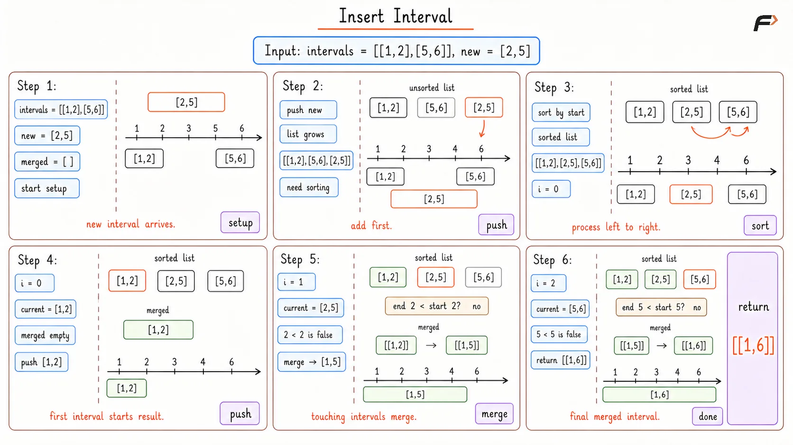
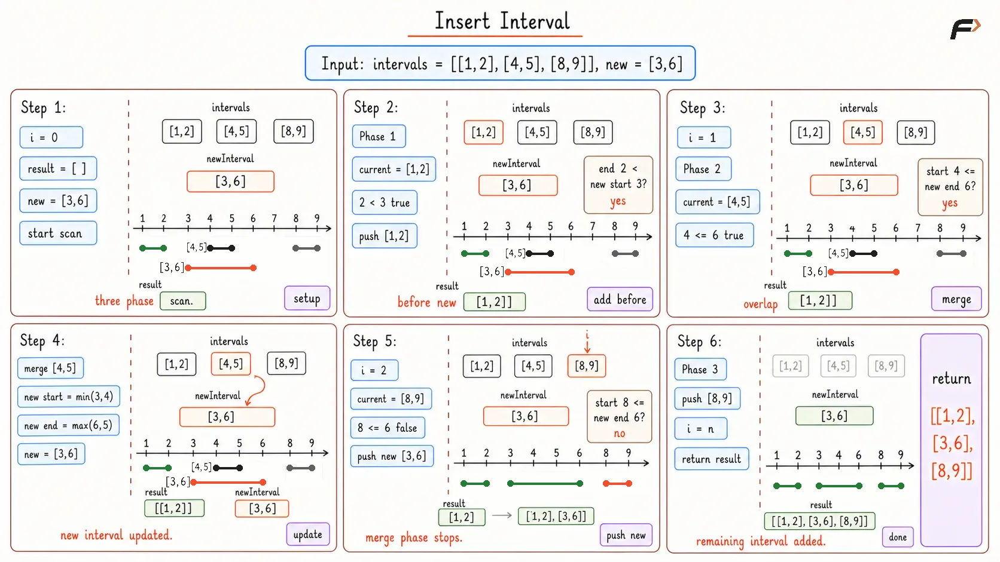

Insert a New Interval
Given an array of non-overlapping intervals where each interval is represented by a start time and an end time. The array is strictly sorted in ascending order based on the start times. You are also given a new single interval. Write a program to insert the new interval into the array so that the array remains sorted and still contains strictly non-overlapping intervals. You must merge any intervals that overlap with the newly inserted one.
Example 1
Input: intervals = [[1, 3], [6, 9]], newInterval = [2, 5]
Output: [[1, 5], [6, 9]]
Explanation: The new interval starts at 2, which falls inside the first interval, and ends at 5. We merge the first interval and the new interval to create a single continuous block from 1 to 5.
Example 2
Input: intervals = [[1, 2], [3, 5], [6, 7], [8, 10], [12, 16]], newInterval = [4, 8]
Output: [[1, 2], [3, 10], [12, 16]]
Explanation: The new interval from 4 to 8 completely engulfs the intervals [3, 5], [6, 7], and touches [8, 10]. They are all merged into one massive continuous interval from 3 to 10.
Brute Force Approach
The direct idea is to add the new interval into the list and then solve the usual merge-intervals problem. Once all intervals are together, sorting by start time restores the order needed for a clean merge.
After sorting, intervals can be processed from left to right. If the current interval starts after the last merged interval ends, it is separate. Otherwise, both intervals belong to the same merged range, so the end of the last merged interval is extended if needed.
Algorithm
Add
newIntervalto the interval list.Sort all intervals by their start time.
Create an empty result list for merged intervals.
Visit the sorted intervals from left to right and place the first interval directly into the result.
If the current interval does not overlap with the last merged interval, append it as a new interval.
Otherwise, merge it by extending the last interval's end, then return the result after all intervals are processed.
Dry Run

Insert Interval Brute Dry Run
Solution
// C++ program to insert interval using Brute Force sorting
#include <bits/stdc++.h>
using namespace std;
class Solution {
public:
vector<vector<int>> insert(vector<vector<int>>& intervals, vector<int>& newInterval) {
// Add the new interval to the original list
intervals.push_back(newInterval);
// Sort the intervals by their start times
sort(intervals.begin(), intervals.end());
vector<vector<int>> merged;
// Iterate through and merge overlapping intervals
for (int i = 0; i < intervals.size(); i++) {
if (merged.empty() || merged.back()[1] < intervals[i][0]) {
merged.push_back(intervals[i]);
} else {
merged.back()[1] = max(merged.back()[1], intervals[i][1]);
}
}
return merged;
}
};
int main() {
Solution sol;
vector<vector<int>> intervals = {{1, 3}, {6, 9}};
vector<int> newInterval = {2, 5};
vector<vector<int>> result = sol.insert(intervals, newInterval);
cout << "Merged Intervals: ";
for (int i = 0; i < result.size(); i++) {
cout << "[" << result[i][0] << ", " << result[i][1] << "] ";
}
cout << endl;
return 0;
}Complexity Analysis
Time Complexity: O(N log N). Appending the item takes constant time, but running a full sorting algorithm on an array of size N + 1 mathematically dictates a linearithmic time complexity.
Space Complexity: O(N). We must allocate a completely new array to store our final merged items, scaling strictly with the size of our inputs.
Optimal Approach
The interval array is already sorted and non-overlapping. This structure makes it unnecessary to sort again. The final answer has three natural parts: intervals completely before the new interval, intervals that overlap with it, and intervals completely after it.
All intervals ending before the new interval starts can be copied directly. All intervals starting before or at the new interval's end must be merged into the new interval. After that merged interval is placed, every remaining interval is already after it and can be copied directly.
The key point is that the sorted order lets each interval be handled once.
Algorithm
Start with an empty result list and begin from the first interval.
Add every interval whose end is strictly before
newIntervalstarts.Merge every interval whose start is at most the current end of
newInterval.After all overlaps are merged, append the updated
newIntervalto the result.Add all remaining intervals because they start after the merged interval ends.
Return the result; empty input naturally returns just the inserted interval.
Dry Run

Insert Intervals
Solution
// C++ program to insert interval using single pass optimal approach
#include <bits/stdc++.h>
using namespace std;
class Solution {
public:
vector<vector<int>> insert(vector<vector<int>>& intervals, vector<int>& newInterval) {
vector<vector<int>> result;
int i = 0;
int n = intervals.size();
// Phase 1: Add all intervals completely before the new interval
while (i < n && intervals[i][1] < newInterval[0]) {
result.push_back(intervals[i]);
i++;
}
// Phase 2: Merge all overlapping intervals into one massive interval
while (i < n && intervals[i][0] <= newInterval[1]) {
newInterval[0] = min(newInterval[0], intervals[i][0]);
newInterval[1] = max(newInterval[1], intervals[i][1]);
i++;
}
// Add the fully merged new interval
result.push_back(newInterval);
// Phase 3: Add all remaining intervals
while (i < n) {
result.push_back(intervals[i]);
i++;
}
return result;
}
};
int main() {
Solution sol;
vector<vector<int>> intervals = {{1, 3}, {6, 9}};
vector<int> newInterval = {2, 5};
vector<vector<int>> result = sol.insert(intervals, newInterval);
cout << "Merged Intervals: ";
for (int i = 0; i < result.size(); i++) {
cout << "[" << result[i][0] << ", " << result[i][1] << "] ";
}
cout << endl;
return 0;
}Complexity Analysis
Time Complexity: O(N). The algorithm utilizes a single pointer that strictly moves forward. Every interval in the array is inspected exactly one time, resulting in an impeccably optimal linear execution.
Space Complexity: O(N). We still physically require an auxiliary data structure to construct and securely hold the newly assembled schedule before returning it.
Interview follow-up Questions
The algorithm handles an empty input array flawlessly. If the array is completely blank, the length evaluates to zero. All three while loops instantly bypass their conditional checks, and the lonely new interval is proudly pushed directly into the result array by itself.